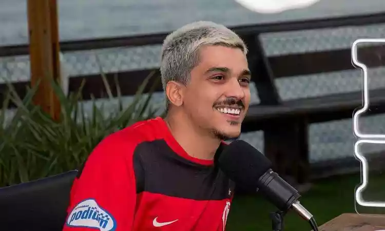

Bem Vindo Ao site do Chiquinho
Por que Gostar do chico moedas?

| Ele é Um homem MUITO fiel |
| 
| Ele é Um Aquariano Nato |
.jpg "Chico Moedas2")
| Ele é Amigo do grande Casé |
Ordem para assistir videos do Chico
- Aqueles Caras
- Live do Cazé
- Em podcasts
Biografia do Chico
Nascido em Niterói, Rio de Janeiro,
em 6 de maio de 1996, Chico ingressou nas faculdades
de Cinema e Administração,
mas não chegou a se formar.
Como passou a investir muito em "bitocin", veio o apelido "Moedas".
Em 2022, o youtuber participou da cobertura da Copa do Mundo 2022 pelo canal de Casimiro Miguel.
b